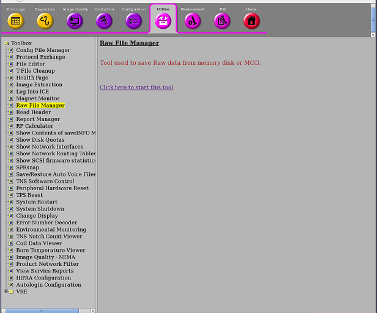
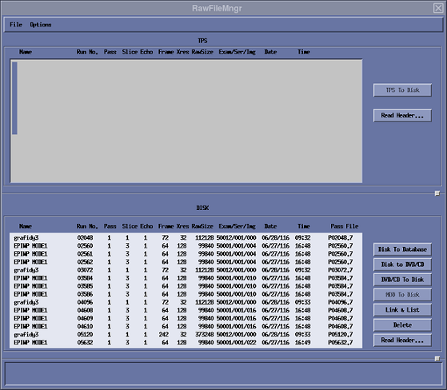

- 00000018WIA3033CF20GYZ
- id_131063271.1
- Jul 6, 2019 2:46:04 AM
Raw File Manager
The Raw File Manager tool allows transfer of raw data files between AP (Array Processor) Memory, and the Image (system). It can determine the last raw data file run number, as well as disk e.g., locked) raw data file housekeeping ("Rebuild File(s) on Disk"). It also provides for manually perming/locking raw files.
TPS/ISE "memory" refers to the Memory Board in the array processor boards (where acquired raw data are placed).
Limitations
-
For Cine and 3-D scans, only NOREC raw data files can be transferred from AP memory.
-
For multi-slice scans, single slices can be transferred from AP memory only for NOREC raw data files (i.e., for multi-slice NOPROC, the entire scan—all slices—must be transferred).
Procedure
-
Select 'Utility' and 'Raw File Manager' from Service Browser.
Figure 1. Starting Raw File Manager from the Service Browser 
-
Click 'Click here to start this tool' to start Raw File Manager.
-
Refer to the steps on Raw Data Interface to view the Raw Data interface.
